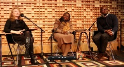
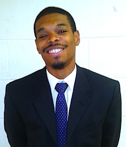
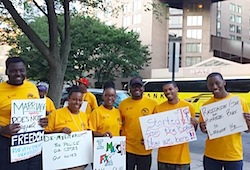
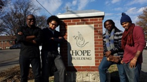
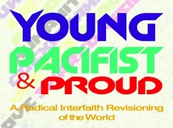
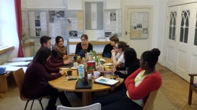

Friends,
Over the past few months, I've had the privilege of working with many outstanding young activists who represent the next generation of global nonviolence leaders. We've stood together in cities near and far -- from Greensboro to Berlin, from Washington, DC to Pointe-Noir, Congo -- strengthening each other's skills and courage to engage our common struggles for human dignity and freedom.
FOR featured in NPR's On Being program this week
Last month, On Being host Krista Tippett interviewed civil rights veteran Gwendolyn Zoharah Simmons in conversation with me, live on stage in Washington.

"Deromanticizing the Civil Rights Movement and Rediscovering Its Humanity," in which we discuss the lessons of the Southern Freedom Movement for today's justice struggles, will be broadcast this weekend on most NPR affiliates -- but you can listen now to the program online!
|
This week, as we as a nation celebrate the birthday of Rev. Dr. King, we share personal reflections by two of these inspiring young adults. Both are already engaged in important work for the expansion of American democracy, yet because of the nonviolence trainings and events they encountered through FOR, discovered their analysis deepened, capacity strengthened, and a home within a community of support and encouragement for the long journey ahead. In 2013, both also decided to become lifetime members of FOR.
Irving David Allen, of Greensboro NC, and Shakya Cherry-Donaldson, of Nashville TN, joined me on the 21st Century Freedom Ride; their stories are below, and my own commentary, "How Will We End Mass Incarceration?" was published yesterday on FOR's web blog.
Irving David Allen
My experiences with FOR have been extremely humbling. My introduction to FOR came with the privilege of attending the 50th anniversary of the March on Washington in August. I joined four other young organizers selected by FOR's Lucas Johnson to attend the Samuel DeWitt Proctor Conference.
At this historic event, we had the opportunity to interact with legendary civil rights figures who shared their courageous tales. We sat in awe listening to Ruby Sales speak about the Selma to Montgomery marches of 1965 and to Rev. Billy Hale give his eyewitness account of the King assassination. We also heard first-hand from Bill Lucy about the labor campaign and birth of the "I Am A Man" slogan.
We attended the 2013 March on Washington as a collective and took part in the celebration of the march 50 years ago -- and the present-day fights for the soul of our nation. Our group benefited immensely from the conference and used the knowledge we gained to stir discussion among youth attending the conference about today's battles for justice and human rights. This experience grew my passion for my work and for what I feel to be my life's mission, fighting for the rights of those who have been and are being oppressed.
In December, I was once again giving the chance to join FOR on a journey of the past, present, and future, on the 21st Century Freedom Ride. Originally convened by CORE and FOR in 1947, our journey focused on the 1961 Freedom Rides orchestrated by students from Tennessee State University, Fisk University, and America Baptist College in Nashville. We traveled from Durham, NC, where we visited the Ella Baker Library, to Greensboro, where we took a grassroots tour of the city with the Beloved Community Center. We ventured to the historic Highlander Center in Tennessee, where we engaged in discussions about the history of the center and current human rights battles. Our final stop was in Nashville, where we toured the city's civil rights landmarks, including the universities of the 1961 freedom riders.
I had an amazingly educational and spiritual experience, and feel a new sense of responsibility to my work and to myself to be the difference that I seek to see in this world.
My travels with FOR provided me with extraordinary opportunities both cultural and educational. However, the most profound and important thing that I gained from my experience was the relationships that I forged with those who in meeting me were strangers, but along the way became my brothers and sisters in the fight for justice and equality.
The relationships I found with these individuals from many different backgrounds have had an immeasurable and lasting effect on how I interact with and perceive other people. In this I feel is the key to changing our world. Building connections with different people brings us closer together, which helps us to heal each other and ourselves. In that healing we find love both for one another and in turn for ourselves.
Shakya Cherry-Donaldson
This past year, I had the opportunity to attend two conferences sponsored by FOR. The first, Young, Pacifist and Proud, took place in February at the FOR headquarters in Nyack, NY. The gathering brought together 15 young adults to discuss what it meant to be pacifist in a hyper-violent culture that is quicker to resolve conflict by drawing a gun than peaceful communication. We all came with various backgrounds, experiences, and identities, but were all united in the belief that human, all humans, suffering must end.
This was my introduction into the rich history that FOR has been a part of and helped to create over its hundred-year existence -- and growing up just a stones-throw away in the Bronx, I never knew such a place existed. Intentional on being a multi-faith, multi-racial, multi-dimensional space, Young, Pacifist and Proud educated us on how our thoughts, ideas, and talents could lend themselves to a global nonviolent movement.
I must admit, at first I was not completely sold on calling myself a pacifist, because growing up I saw that aggression and violence equated themselves to power. But after sitting in this space with wonderful facilitators such as FOR Interfaith Peacewalks Coordinator Rabbi Lynn Gottlieb and FOR Northeast Regional Organizer Leila Zand -- who have worked their entire lives to end violence and bring meaningful healing and reconciliation to people traumatized by it -- I began to understand the power that this movement can harness. On the second night, as I began to fully grasp the weight of the importance of this work and how I can play a part in it, I silently wept at the dinner table. Rabbi Lynn must have seen me, and without making it a spectacle, she grabbed my hand, in that moment I became a believer without reservation.
 While the subjects were serious in nature, the community that FOR and Shadowcliff establishes with its shared meals, clean up, and sleeping facilities creates a family-like bond that allows for disagreement, healthy debate, and resolution to be done respectfully and lovingly with one another. After leaving I purposefully stayed in touch with many of the participants, lending my support to their various projects as well as with FOR. While the subjects were serious in nature, the community that FOR and Shadowcliff establishes with its shared meals, clean up, and sleeping facilities creates a family-like bond that allows for disagreement, healthy debate, and resolution to be done respectfully and lovingly with one another. After leaving I purposefully stayed in touch with many of the participants, lending my support to their various projects as well as with FOR.
When the opportunity came up to attend an international meeting of young adults sponsored by the International FOR in Berlin, I jumped on it. I have lived and traveled through several countries, and believe that radical change is no longer isolated to specific communities and countries, but a global struggle.
So, a week after Thanksgiving, I joined a delegation of ten young adults, all involved with nonviolent resistance, in Germany. Once again, an intentional community was created at the Martin Niemoller House with a diverse group of people strategizing how to expand on the foundation IFOR has established so it may be relevant for another hundred years.
With Lucas Johnson leading the group, we made it our personal mission to see the project through. While we aren't yet ready to announce what we've planned, on the eve of the Fellowship of Reconciliation's 100th anniversary, I am proud to call myself a member. I am merely a vessel used by the powers that be to bring positivity and preserve life in the world.
These outstanding young adults and others represent the next generation of nonviolence leaders that we at the Fellowship of Reconciliation are working with right now.
Your generous donation to FOR helps us continue to identify and train young leaders such as Irving and Shakya for the movements of today and tomorrow.
Thank you for the support you show FOR.
In peace,
Rev. Lucas Johnson
Southeast & Mid-Atlantic Regional Coordinator/Organizer
Fellowship of Reconciliation |

{kind=link}